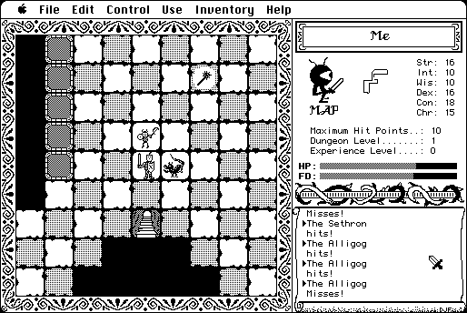

Download
DungeonOfDoom-4.0.zip (98K) Dungeon of Doom V4.0 repackaged into a zipped hfs disk image and checksum file. The disk image can be mounted with Mini vMac.
copyright: John Raymonds
mod date: Jul 19, 1986
license: shareware
Graphical dungeon adventure game.

If you find these downloads useful, please consider helping the Gryphel Project, which hosts them.
Here is the md5 checksum for the download, signed with Gryphel Key 5:
--------- GRY SIGNED TEXT --------- 7d2fa05834fe564ec0eb8fd450f4bda2 DungeonOfDoom-4.0.zip ------- BEGIN GRY SIGNATURE ------- Gry/4Xa8CFcUzxdN/Ai1gZ8l49KthO2MTB+6GJZoamp7CzqrwAy1LddayXaxzWEM ekm2Oq9FKHZi31LFVB/ST1tk5Fam8rOCZyQ/jAneJoz2bISwfpPlKGlTq95Q6MXg dU+F2X3Emf2raqjhwJW1na5rpY68TF08z6ejJOVfiMm6qivywEb7aKBjEwUG5/+A -------- END GRY SIGNATURE --------